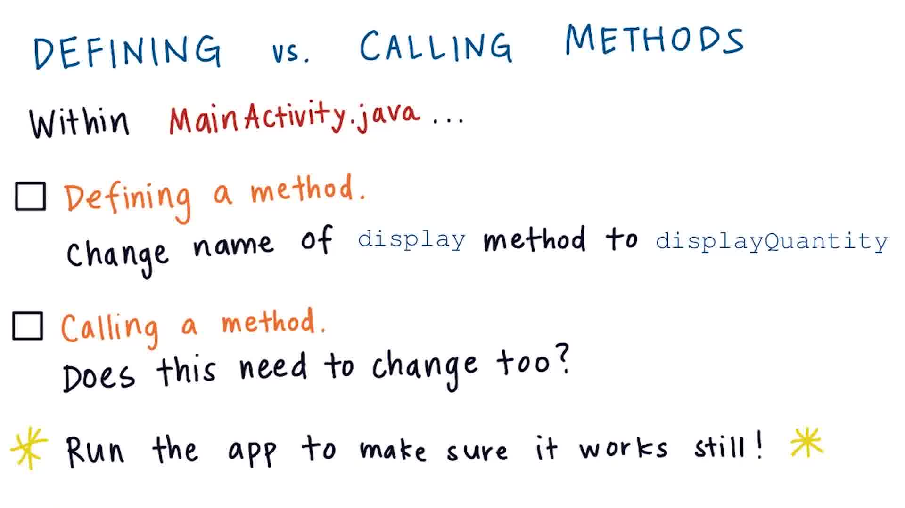

02. Defining vs Calling a Method
Defining vs Calling a Method
Question:
Start Quiz:

Solution:
INSTRUCTOR NOTE:
The keyboard shortcut for going to a method declaration in Android Studio is :
- On Mac command+b
- On Windows control + b